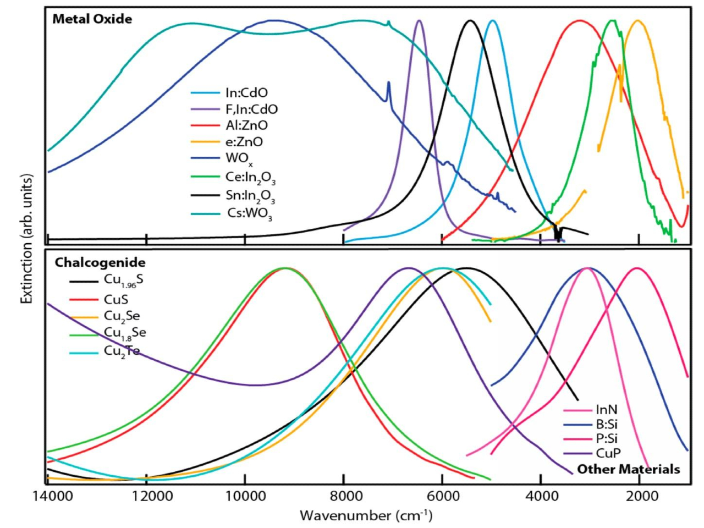
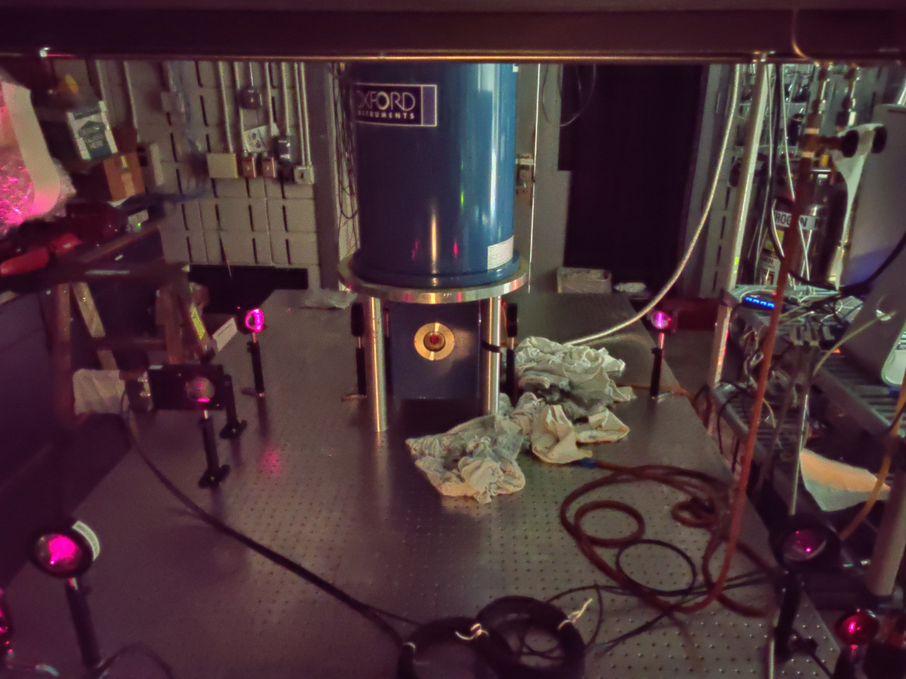

Plasmonic Semiconductor Design |
Instrument Development |
| Oxide semiconductors are frequently observed with a localized surface plasmon resonance (LSPR) at various energy regimes, as seen above.1 | In collaboration with Dr. Steve McGill at the National High Magnetic Field Lab (NHMFL), Jason is working on the development and optimiziation of a high field, low temperature, mid-infrared (MIR) MCD setup. |
Morphology Control |
Magnetic Circular Dichroism |
Plasmon - A collective oscillation of free-carriers (electrons or holes)
Plasmon - A collective oscillation of free-carriers (electrons or holes)
Plasmon - A collective oscillation of free-carriers (electrons or holes)
Plasmon - A collective oscillation of free-carriers (electrons or holes)
Plasmon - A collective oscillation of free-carriers (electrons or holes)
Plasmon - A collective oscillation of free-carriers (electrons or holes)
test
Roses are red Violets are blue Blah bah blah